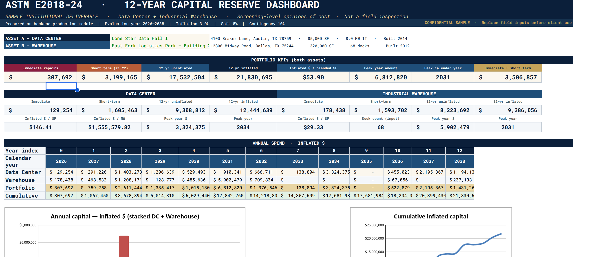
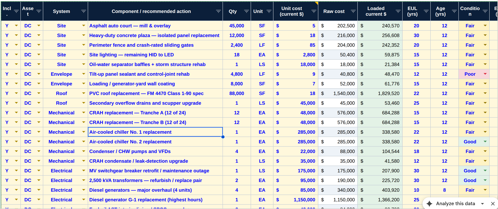
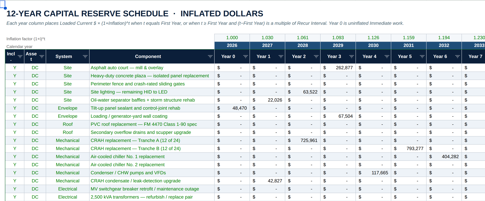

Engineering firms · Inspectors · Lenders
Clear your report backlog. Scale inspection volume without adding fixed overhead.
Field engineers excel at physical site walks and structural assessments — not spending hours wrestling with ASTM spreadsheets and formatting 12-year Capital Reserves tables. I serve as a backend financial analytics desk for engineering firms, translating raw field notes and draft PDFs into institutional-grade, lender-ready Excel pro-formas.
Key service capabilities
ASTM E2018-24 Capital Reserve Automation
Convert raw field observations into formula-linked, multi-scenario 12-year reserve tables.
Lender & Private Equity Formatting
Standardize technical engineering findings directly into institutional CRE underwriting templates.
Report Backlog Clearance
Zero field liability — purely a fractional analytics and production desk that helps senior engineers double their weekly inspection capacity.
How a report becomes a pro-forma
Under the hood: the same document-to-model engine (FastAPI + DuckDB + PDF transclusion) that powers Meridian parses your field notes and Excel DCFs — so every number in the pro-forma is traceable to a source page. Meridian deck ↗
Sample deliverable: a two-asset data-center + industrial-warehouse ASTM E2018-24 capital reserve dashboard, built as an outreach example. See the rendered snapshot below (jump to preview ↓); the live Excel workbook is shared on request via pramodty@gmail.com with the accompanying workflow notes.
Sample deliverable — preview
More Artifacts →A two-asset data-center + industrial-warehouse capital reserve workbook. Below is a static snapshot of the Dashboard, Inventory, and 12-year Reserve Schedule tabs. The live Excel stays private and is shared on request.
Dashboard

Inventory

Reserve Schedule

Live Excel workbook available on request via pramodty@gmail.com.
How to start
Send a redacted field-note pack or a draft PCR. I return a scoped workbook and a turnaround time — no obligation, no field liability.
Austin, Texas · Independent consultant · Field inspections stay with your team · Not investment advice